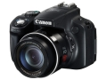

采用1210万像素的背照式CMOS传感器，搭载50倍光学变焦镜头，拥有最大可降低4.5档快门的影像稳定器，支持全手动模式。
小底DC+超长焦段能达到这样的画质，应该说实属难得，更何况性价比超好，摄影范围广泛，远近皆宜，尤其是对于旅游或学习摄影来讲，是一款很值得拥有的家用相机
画质在1/2.3的底来说，算是满意了，微距对焦可以去到1cm (甚至0距离)，整个焦段有215mm用，还想怎样？！至少带有全高清拍摄——哪怕帧数只有24/秒（其实标清也没啥不理想，挺好的），这次佳能给了超长焦DC最好的（同时又有到喉不到肺的）配置，比如说防抖效果、电子取景器、翻转屏、RAW存储格式、远处目标预先锁定（拉近）......等等，以牙膏厂的性格来讲，应该是有诚意的了
有几个，1、电子取景器效果仅仅是聊胜于无，屏幕小、看久了头晕且不说，而且分辨率实在是低，同时只有画面中央清晰，四周都是模糊和变形；2、LCD尺寸小且分辨率同样低，对回看效果不理想；3、SX50HS的画质基本上需要后期下才会出彩，直出色彩暗淡（除非用“鲜艳”模式，但不是什么场合都适用这个模式的吧），其他的也没啥缺点了，其实不是没啥缺点，只是对于这款性价比超好的机器来说，还能有啥更高的奢求呢，满足吧！
在canon所有dc中SX50是最厚道的，不到3k的价格，强悍的性能绝对DC中的战斗机。最满意的地方拍鸟灵活，很多时候大炮不方便拍的SX50轻松搞定。
1.24-1200mm各种题材都能拍 2.镜头防抖功能出色 3.1080p视频可以自动跟焦
1.高感画质弱了点 2.伺服对焦比较烂 3.mf无法锁定 4.高速视频画质损失较大